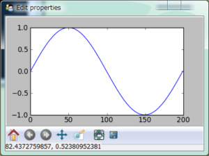

相关文档： 设计自己的Trait编辑器
在traitsUI所产生的界面中嵌入matplotlib的控件。
# -*- coding: utf-8 -*-
# file name: mpl_figure_editor.py
import wx
import matplotlib
# matplotlib采用WXAgg为后台，这样才能将绘图控件嵌入以wx为后台界面库的traitsUI窗口中
matplotlib.use("WXAgg")
from matplotlib.backends.backend_wxagg import FigureCanvasWxAgg as FigureCanvas
from matplotlib.backends.backend_wx import NavigationToolbar2Wx
from enthought.traits.ui.wx.editor import Editor
from enthought.traits.ui.basic_editor_factory import BasicEditorFactory
class _MPLFigureEditor(Editor):
"""
相当于wx后台界面库中的编辑器，它负责创建真正的控件
"""
scrollable = True
def init(self, parent):
self.control = self._create_canvas(parent)
self.set_tooltip()
print dir(self.item)
def update_editor(self):
pass
def _create_canvas(self, parent):
"""
创建一个Panel, 布局采用垂直排列的BoxSizer, panel中中添加
FigureCanvas, NavigationToolbar2Wx, StaticText三个控件
FigureCanvas的鼠标移动事件调用mousemoved函数，在StaticText
显示鼠标所在的数据坐标
"""
panel = wx.Panel(parent, -1, style=wx.CLIP_CHILDREN)
def mousemoved(event):
panel.info.SetLabel("%s, %s" % (event.xdata, event.ydata))
panel.mousemoved = mousemoved
sizer = wx.BoxSizer(wx.VERTICAL)
panel.SetSizer(sizer)
mpl_control = FigureCanvas(panel, -1, self.value)
mpl_control.mpl_connect("motion_notify_event", mousemoved)
toolbar = NavigationToolbar2Wx(mpl_control)
sizer.Add(mpl_control, 1, wx.LEFT | wx.TOP | wx.GROW)
sizer.Add(toolbar, 0, wx.EXPAND|wx.RIGHT)
panel.info = wx.StaticText(parent, -1)
sizer.Add(panel.info)
self.value.canvas.SetMinSize((10,10))
return panel
class MPLFigureEditor(BasicEditorFactory):
"""
相当于traits.ui中的EditorFactory，它返回真正创建控件的类
"""
klass = _MPLFigureEditor
if __name__ == "__main__":
from matplotlib.figure import Figure
from enthought.traits.api import HasTraits, Instance
from enthought.traits.ui.api import View, Item
from numpy import sin, cos, linspace, pi
class Test(HasTraits):
figure = Instance(Figure, ())
view = View(
Item("figure", editor=MPLFigureEditor(), show_label=False),
width = 400,
height = 300,
resizable = True)
def __init__(self):
super(Test, self).__init__()
axes = self.figure.add_subplot(111)
t = linspace(0, 2*pi, 200)
axes.plot(sin(t))
Test().configure_traits()